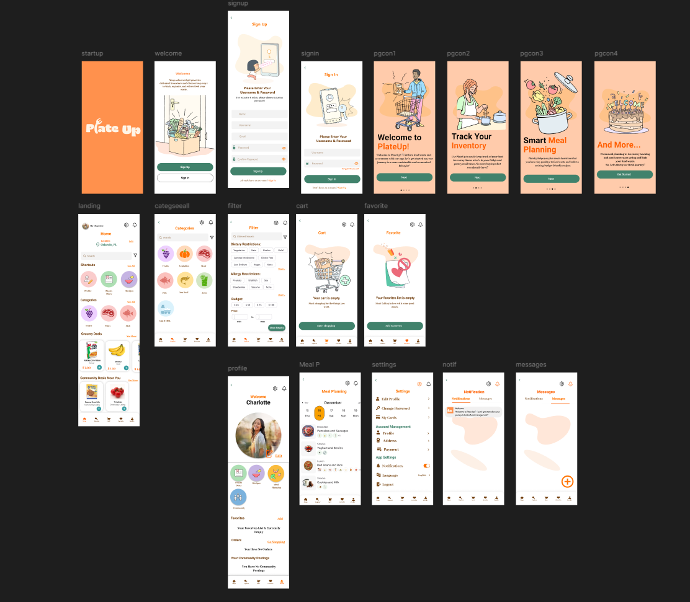

This project involved designing a mobile app for ordering food from local grocery stores as a solution for limiting food waste, focusing on user experience and accessibility.
Plate Up is a food waste reduction app developed as a Fall 2024 user-centered design project, aimed at connecting consumers, restaurants, farmers, and food banks to reduce surplus food waste. The team conducted competitive analysis of six existing apps (Too Good To Go, Nosh, Olio, Imperfect Foods, SuperCook, and Phenix) and surveyed users to identify key pain points like forgetting about expiring food, difficulty tracking pantry inventory, and inconsistent meal planning habits. The app's core features include pantry/expiration tracking, AI-powered recipe suggestions based on available ingredients, a community food-sharing feed, a food drop-off marketplace, and a personal impact tracker. The design went through three high-fidelity visual concepts before users selected the "Natural Organics" theme — a warm palette of greens, oranges, and browns — for its alignment with the app's sustainability mission. Usability testing revealed navigation gaps and non-functional prototype elements, which informed a final round of design improvements focused on clearer button labels, confirmation feedback, and streamlined login flows.
Through user testing and feedback, the team identified several key insights: users responded positively to the app's earthy visual identity, intuitive mission, and personalized dietary preferences, while also highlighting the need for clearer navigation, better login functionality, and more interactive elements. The evaluation process revealed that features like favorites, settings, profile pages, and certain category buttons were left non-functional, and the login/sign-up flow had critical usability issues that disrupted the overall experience. Due to time constraints inherent to an academic semester project, the team was unable to fully develop and polish all intended features, leaving areas like local store integration, advanced filtering, and complete navigation flows as opportunities for future iteration and improvement.